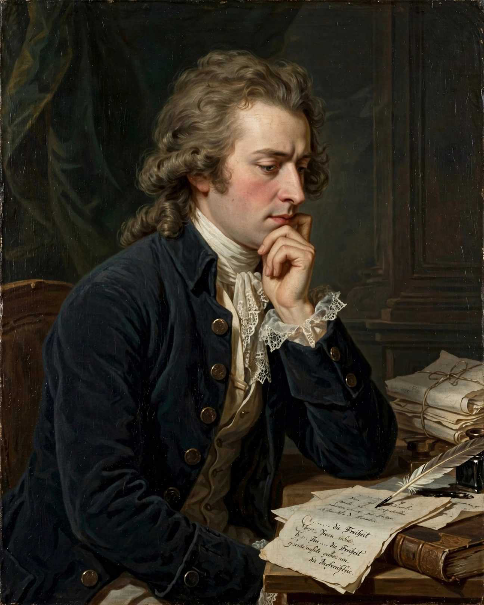

"Ode to Joy" (German: "An die Freude", literally "To Joy") is an ode written in the summer of 1785 by the German poet, playwright and historian Friedrich Schiller and published the following year. A slightly revised version appeared in 1808. The ode is best known for its use by Ludwig van Beethoven in the final (fourth) movement of his Ninth Symphony, completed in 1824, where selected verses are sung by soloists and chorus. Beethoven's melody, in an arrangement by Herbert von Karajan, was adopted as the anthem of the European Union.
| Author | Friedrich Schiller |
|---|---|
| Written | 1785; revised 1808 |
| Language | German |
| Form | Ode |
| Famous setting | Beethoven, Symphony No. 9 (1824) |
| Status | Melody is the anthem of the European Union and the Council of Europe |

Schiller wrote the ode in 1785 while staying in Leipzig and Dresden, inspired by the ideals of the Enlightenment and, in the judgement of many scholars, the fraternal ideals of Freemasonry. Its famous first line, "Freude, schöner Götterfunken" ("Joy, beautiful spark of divinity"), heralds a vision of universal brotherhood: "Alle Menschen werden Brüder" — "All men shall become brothers." According to a persistent but unproven tradition, Schiller originally wrote "Freiheit" (freedom) rather than "Freude" (joy), changing the word to evade censorship.
Beethoven had admired the poem from his youth and finally set it in the finale of his Ninth Symphony (1824), the first major symphony to employ voices. He selected and reordered Schiller's verses, adding lines of his own ("O Freunde, nicht diese Töne!"). The premiere in Vienna on 7 May 1824 was a triumph despite the composer's deafness. The "Ode to Joy" melody became one of the most recognisable themes in Western music.
In 1972 the Council of Europe adopted Beethoven's melody as its anthem, in an arrangement by Herbert von Karajan; in 1985 it was adopted by the European Community (now the European Union) as its official anthem. Without words, in the "universal language of music", it expresses the European ideals of freedom, peace and solidarity. The tune has served many other causes too: it was the national anthem of Rhodesia (1974–1979), is sung in Japan in year-end performances of the Ninth (Daiku), and featured in Leonard Bernstein's 1989 Berlin performance celebrating the fall of the Berlin Wall, where "Freiheit" was substituted for "Freude".